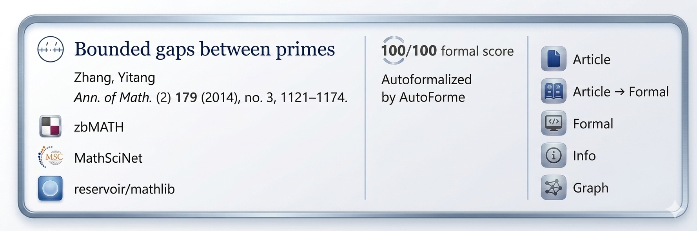

Defines a paper-level score of how many published statements are formalized in Lean/mathlib, estimated by LLM alignment of papers with Lean formalizations.
Abstract
Mathematical knowledge is split between bibliographic databases (e.g., MathSciNet, zbMATH Open) and formal proof libraries (e.g., Lean's mathlib), preventing unified access to published results and their formalizations. We propose a relational bridge-database that aligns publication metadata with formal artifacts, providing an interoperability layer between mathematical literature and machine-verifiable proofs. We introduce a paper-level formalization score that measures how much of a publication is covered in formal systems, together with a correctness profile recording what machine verification has established about each printed statement: certified, corrected, uncorrected, open, or untested. As a feasibility study, we show how such scores can be estimated via cross-document alignment between informal texts and Lean formalizations, enabling large-scale analysis of formalization coverage. We further outline a concrete construction pathway: multi-source scoring over heterogeneous formalization artifacts, an agentic collection workflow with direct author submission, a dual validation policy, algorithmic then human, and a global formalization score of indexed mathematics. This framework is a step toward integrating bibliographic and formal mathematical ecosystems.
Problem
Published mathematics is indexed in bibliographic databases such as MathSciNet and zbMATH Open. Formal libraries such as Lean's mathlib live in a separate ecosystem. No unified way exists to see whether, and how much of, a publication has been formalized.
Approach
The authors propose a relational bridge-database that links bibliographic records to formal artifacts. It records a correctness profile for each statement. A paper-level formalization score is defined as the percentage of a paper's statements (definitions, theorems, sub-parts) fully formalized in Lean, with proofs required for provable statements. As a feasibility study, Google Gemini is prompted zero-shot with a paper PDF and its Lean formalization document to extract statements, classify them, match them, and compute the score.

Figure 3: Proposed interface overview. The reported score is illustrative as of 2026.
Results
The LLM produced plausible scores across several case studies: fully formalized, partially formalized, and unrelated pairs. Scores ranged from 100 and 96.30 down to 0 for an unrelated pair. The authors outline a construction pathway that includes agentic collection, author submission, and dual algorithmic-plus-human validation.